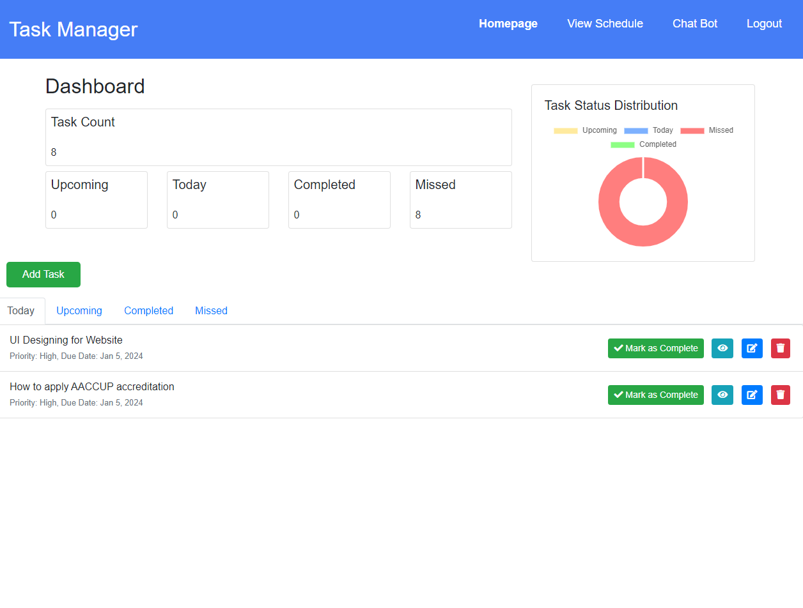
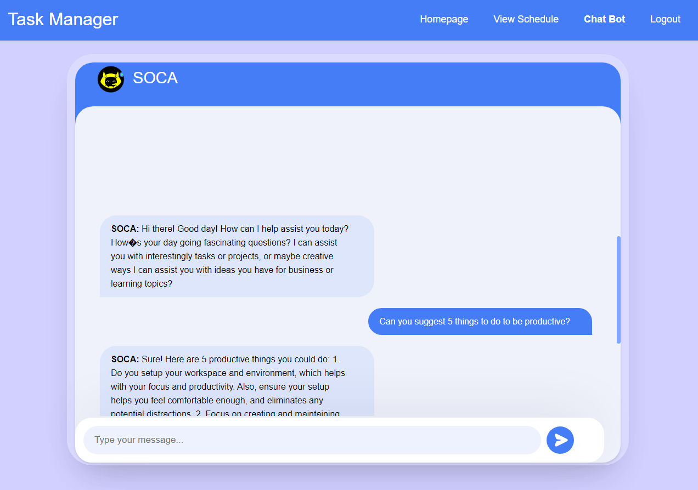
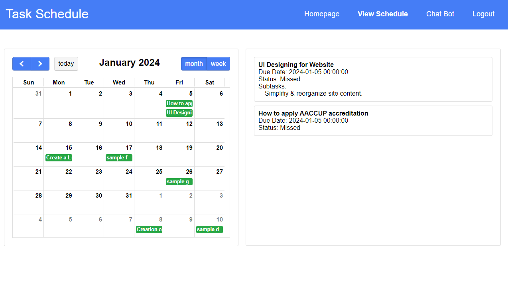

In the digital age, task management has evolved from simple to-do lists to sophisticated systems that harness the power of artificial intelligence (AI) and generative text. Meet SOCA – an innovative Task Management System that seamlessly integrates AI and Generative Text for automated subtask generation, empowering users to streamline their workflow like never before. In this article, we delve into the development journey of SOCA, highlighting the technologies that drive its functionality and the impact it promises to deliver.
At its core, SOCA is built upon a robust stack of web technologies, including PHP, HTML, CSS, JavaScript, jQuery, AJAX, Bootstrap, and MySQL. Each component plays a pivotal role in shaping the user experience and driving the system's functionality. PHP serves as the backbone for server-side processing, handling dynamic content generation and database interactions seamlessly. HTML, CSS, and JavaScript, along with libraries like jQuery and Bootstrap, ensure a responsive and visually appealing interface that adapts to various devices and screen sizes.
However, what truly sets SOCA apart is its integration of AI and Generative Text capabilities, made possible through the Cohere API. By leveraging the power of AI, SOCA is able to understand user inputs, analyze tasks, and generate meaningful subtasks automatically. This transformative feature not only saves users valuable time but also enhances productivity by breaking down complex tasks into manageable steps.The development process of SOCA was a journey of innovation and collaboration. It began with a vision to create a task management system that goes beyond traditional approaches and embraces cutting-edge technologies. Extensive research and experimentation were conducted to identify the most effective ways to integrate AI and Generative Text into the platform seamlessly. Through iterative development and feedback from early users, SOCA evolved into a robust and user-friendly solution that addresses the diverse needs of modern professionals.
One of the key challenges encountered during the development of SOCA was ensuring the seamless integration of the Cohere API with the existing framework. This involved thorough testing and optimization to fine-tune the AI algorithms and ensure accurate and relevant subtask generation. Additionally, maintaining data security and privacy was a top priority, requiring robust encryption and authentication mechanisms to safeguard sensitive information stored within the system.
As SOCA nears its launch, the potential impact it promises to deliver is immense. By harnessing the power of AI and Generative Text, SOCA empowers users to conquer their to-do lists with ease, allowing them to focus on what matters most – their goals and aspirations. Whether managing personal projects or collaborating with teams, SOCA revolutionizes the way tasks are organized, prioritized, and executed.
In conclusion, SOCA represents a paradigm shift in task management, where AI and Generative Text converge to create a truly transformative experience. By combining state-of-the-art technologies with intuitive design principles, SOCA sets a new standard for productivity tools in the digital age. As we look towards the future, the potential for innovation and growth in this space is limitless, and SOCA stands at the forefront of this exciting journey.
BackCopyright © Aldren Bagual
Distributed By DrenGual